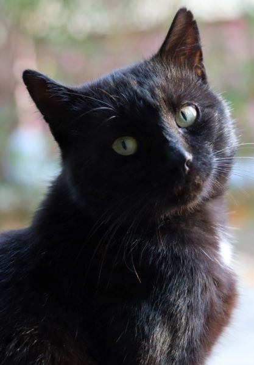
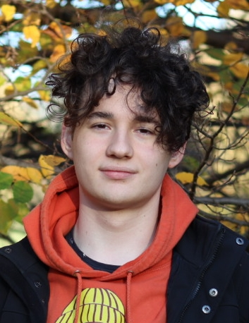

Bemutatkozás


Zumbók Benedek vagyok, a BME elsőéves hallgatója a gépészmérnöki kar energetikai mérnöki szakán. Zalaegerszegről származom, középiskolai tanulmányaimat a Zrínyi Miklós Gimnáziumban végeztem. A középiskolában matek és fizika fakultációra jártam, a főleg a reál terület érdekelt mindig. Introvertált személynek tartom magam, viszont úgy érzem, mégis tudok bárkivel kommunikálni. Ami pedig a háziállatokat érinti, egy macskám van.